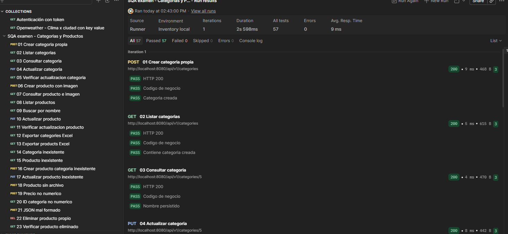

Primer parcial de Software Quality Assurance · Univalle
Fecha de verificación técnica: 24 de septiembre de 2026
Verificar categorías, productos, imágenes y exportaciones del proyecto Spring Boot entregado por el docente. Las pruebas comprueban datos, códigos de respuesta y manejo de errores en las capas Controller, Service y Utils.
La ejecución con JDK 25 finalizó con 88 pruebas aprobadas, sin fallos ni errores. La colección funcional sobre MySQL completó 25 solicitudes y 57 verificaciones sin fallos. La cobertura global de líneas fue 97,51 %. El detalle de otras métricas y sus límites se presenta en la página 5.
| Nombre | Responsabilidad |
|---|---|
| Persona 1 | Scrum Master, entorno, integración y cobertura |
| Persona 2 | Servicios y controlador de categorías |
| Persona 3 | Servicios y controlador de productos |
| Persona 4 | Compresión, Excel y registro de bugs |
| Jesus Zeballos (Persona 5) | Postman, plan, casos e informe |
Repositorio del equipo: https://github.com/Sunner-01/SQA-Parcial-1
Rama Persona 5: jesus-zeballos
Los controladores exponen las operaciones HTTP; los servicios coordinan repositorios, categorías y productos; las utilidades comprimen imágenes y generan Excel. Estas siete clases concentran los comportamientos solicitados. No se incluyen interfaz gráfica, carga, seguridad ni cambios de reglas de negocio.
Las pruebas y este material se prepararon con asistencia de IA, contemplada por el enunciado. Cada integrante revisa, ejecuta y documenta su parte antes de subirla desde su cuenta.
1 de 6
JUnit 5 ejecuta los escenarios; Mockito sustituye DAOs en los servicios y servicios en los controladores. MockMvc standalone comprueba rutas, parámetros y multipart. ArgumentCaptor verifica los campos enviados. Los tests de Excel abren los libros reales con Apache POI.
Las pruebas originales de repositorio y contexto usan H2. Postman/Newman recorre la API completa con MySQL real, crea datos propios y los elimina al terminar. Se distinguen pruebas unitarias, de componente y de integración.
| Historia | Necesidad y aceptación |
|---|---|
| HU01 Categorías | Crear, listar y consultar categorías; los datos guardados pueden recuperarse. |
| HU02 Modificación | Actualizar y eliminar categorías; el cambio persiste y la consulta tras borrar retorna 404. |
| HU03 Excel categorías | Descargar ID, nombre y descripción en XLSX. |
| HU04 Alta de productos | Guardar producto con imagen y categoría; una categoría ausente produce 404. |
| HU05 Consultas | Listar, buscar por ID y filtrar por nombre con imagen recuperada. |
| HU06 Actualización | Editar nombre, precio, cantidad, categoría e imagen; eliminar producto. |
| HU07 Excel productos | Descargar ID, nombre, precio, cantidad y categoría. |
| HU08 Errores | Formato inválido 400, ausentes 404 y fallos simulados de repositorio 500. |
JDK 25 y Maven Wrapper para Java; Docker Desktop o XAMPP con MySQL y API en localhost:8080 para pruebas funcionales. Cada prueba unitaria prepara sus datos y mocks. La colección funcional requiere ejecutar los requests en orden.
Cierre: suite y colección aprobadas, métricas completas revisadas, hallazgos registrados y PR revisados. La calidad depende de las assertions y de los escenarios, no solamente del porcentaje.
2 de 6
Precondición común: JDK 25 y dependencias descargadas. Los siguientes casos agrupan escenarios; su detalle ejecutable está en los archivos de test y en PLAN-Y-CASOS.md.
| ID | Datos y acción | Resultado esperado |
|---|---|---|
| CU01–03 | Consultar categorías, ausentes, guardar entidad o retorno null. | Lista/objeto correcto; 200, 404 o 400. DAO con excepción produce 500. |
| CU04–06 | Actualizar nombre y descripción; borrar ID; simular errores. | ID preservado, save correcto, ausencia sin save; 200/400/404/500 según caso. |
| CU07–08 | Guardar producto con categoría válida o ausente. | Asociación correcta; 404 sin persistir si falta categoría; 400/500 en errores. |
| CU09–10 | Consultar, listar y filtrar productos con imagen comprimida. | Bytes originales y datos; vacío 404, error de DAO 500. |
| CU11–13 | Actualizar todos los campos y borrar producto. | Datos completos, ID conservado y operaciones al repositorio verificadas. |
| CU14–16 | Rutas HTTP, multipart, precio abc, ID abc, JSON inválido y archivo ausente. | Propagación de respuesta; captura de campos; errores 400 sin servicio. |
| CU17–18 | Exportar categorías/productos con filas, sin filas y salida fallida. | Cabeceras, valores y tipos correctos; IOException propagada. |
| CU19–20 | Comprimir y recuperar 8192 bytes, vacío válido, null y cabecera corrupta. | Igualdad byte a byte; null rechazado; corrupta retorna vacío como comportamiento caracterizado. |
MockitoExtension, @Mock, @InjectMocks, assertions de JUnit, verify y ArgumentCaptor. Se preservan 28 tests originales y se agregan 60. Ocho tests originales usan integración con H2; no se presentan las 88 pruebas como unitarias puras.
Comando global: mvnw.cmd -B clean verify. Evidencia por clase en Surefire y resumen en evidencias/resumen-junit.json. El responsable debe adjuntar su ejecución y el commit probado.
3 de 6
Precondiciones: MySQL con db_inventory, API en 8080, entorno local importado y fixture producto.png seleccionado. Los IDs se capturan desde POST y se reutilizan; no se borran registros ajenos por IDs fijos.
| Caso | Requests y pasos | Esperado |
|---|---|---|
| CF01 | 01–03 Crear categoría única, listar y consultar. | 200; ID y nombre persistidos. |
| CF02 | 04–05 Actualizar categoría y releer. | 200; nombre y descripción nuevos. |
| CF03 | 06–09 Crear producto, leer, listar y filtrar. | 200; categoría, precio 12, cantidad 5 y PNG original. |
| CF04 | 10–11 Actualizar a Queso SQA y consultar. | Precio 25, cantidad 9, nombre e imagen correctos. |
| CF05 | 12–13 Exportar categorías y productos. | 200; archivo adjunto y firma ZIP. Contenido de celdas probado con POI. |
| CF06 | 14–17 Consultar ID 0, categoría ausente y actualización ausente. | 404; código de negocio -1. |
| CF07 | 18–21 Sin archivo, precio abc, ID abc y JSON inválido. | 400. |
| CF08 | 22–25 Borrar producto, comprobar, borrar categoría y comprobar. | DELETE 200; GET posterior 404. |
Ejecución completada: 25 solicitudes ejecutadas, 57 aserciones aprobadas y 0 fallos (100 % éxito). Se verificó la persistencia de datos y el manejo de respuestas 200, 400 y 404 en MySQL local.
Reportes generados: evidencias/newman-verificado.json y evidencias/postman-verificado.log.

4 de 6
| Alcance | Líneas | Instrucciones | Ramas |
|---|---|---|---|
| Proyecto completo | 97,51 % | 79,34 % | 35,07 % |
| Controller + Service + Utils | 98,37 % | 98,28 % | 92,50 % |
| Services | 100 % | 100 % | 100 % |
| Controllers | 100 % | 100 % | No contabilizadas |
| Utils | 95 % | 94,57 % | 81,25 % |
JaCoCo registra 392 de 402 líneas globales cubiertas. La cobertura global de ramas/instrucciones incluye código generado por Lombok en modelos y no alcanza el mismo porcentaje. No se excluyeron clases para elevar métricas. El código objetivo de las siete clases tiene 361 de 367 líneas cubiertas.
| ID y estado | Problema, evidencia y acción |
|---|---|
| ENV01 Resuelto en entorno | Configuración de compatibilidad de JDK y dependencias para ejecución limpia de la API y su posterior compilación con Maven Wrapper. |
| BUG01 Reproducido y abierto | Util.decompressZLib({1,2,3,4}) silencia el formato inválido y retorna vacío. Test de caracterización agregado. Propuesta: error explícito, contrato a confirmar. |
| RIESGO02 Inspección | El bucle de Inflater no comprueba falta de progreso; entrada truncada podría no terminar. Pendiente reproducir en proceso aislado con límite externo. Propuesta: controlar needsInput/needsDictionary. |
| RIESGO03 Inspección | Exportación usa la lista del servicio sin comprobar estado. Pendiente test específico. Propuesta: validar respuesta antes de escribir XLSX. |
El código de producción se conserva. No se declara corregido un bug solamente por documentarlo. Las diferencias de respuestas vacías (categorías 200, productos 404) requieren acuerdo de contrato antes de calificarlas como defectos.
5 de 6
Sprint propuesto: dos días. Día 1: organización, entorno, revisión de clases y ejecución por responsable. Día 2: revisión cruzada, integración, evidencia funcional y ensayo de exposición. Registrar lo realizado efectivamente en el tablero.
| Responsable | Backlog y rama | Evidencia entregada |
|---|---|---|
| Persona 1 | Repositorio, CI e integración chore/organizacion | Issue, PR y reporte global |
| Persona 2 | Categorías test/categorias | Issue, commit, PR y tests |
| Persona 3 | Productos test/productos | Issue, commit, PR y tests |
| Persona 4 | Utilidades y bugs test/utilidades | Issue, commit, PR y tests |
| Jesus Zeballos | Postman y plan jesus-zeballos | Issue #5, PR personal, Runner 57 passed |
Tablero: Pendiente, En curso, En revisión y Terminado. Reunión diaria breve sobre avances, siguiente tarea y bloqueo. Cada PR referencia su issue; una persona distinta revisa los cambios. Terminado significa revisado, probado, documentado e integrado.
Repositorio: https://github.com/Sunner-01/SQA-Parcial-1
Rama de trabajo Persona 5: jesus-zeballos
Responsable Persona 5: Jesus Zeballos (Suite Postman, informes y casos de prueba)
Repositorio con código, tests, README y colección; informe de seis páginas; exposición de seis minutos. La demo combina pruebas Java, contenido de Excel, Postman, cobertura y flujo GitHub. Cada integrante explica su propia área.
Las plantillas oficiales de casos y bugs no estaban entre los archivos recibidos. Trasladar el contenido si el docente exige ese formato. Completar nombres, enlaces y capturas antes de entregar. La CI está preparada, pero su ejecución en GitHub y la colaboración del equipo aún deben realizarse.
6 de 6